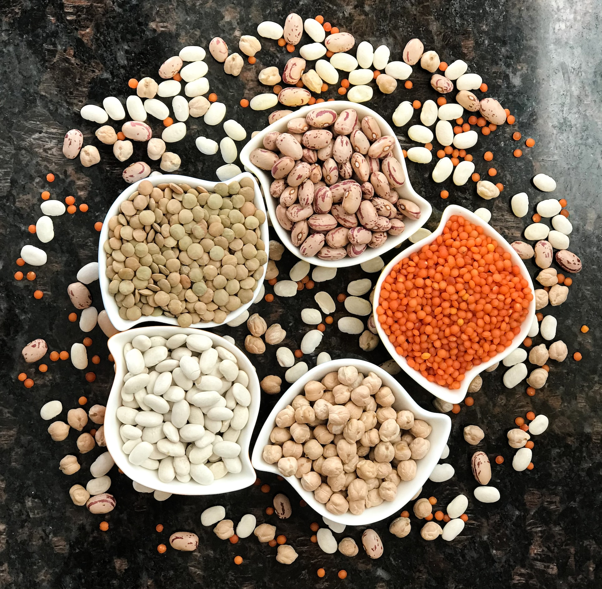

Guias para una buena alimentacion

Carbohidratos
Muchos alimentos contienen carbohidratos, incluso: Fruta y jugo de fruta.Cereal, pan, pasta y arroz. Leche y productos lácteos, leche de soja. Frijoles, legumbres y lentejas. Verduras con almidón como las patatas y el maíz
Proteinas
Son los nutrientes que desempeñan un mayor número de funciones en las células de todos lo seres vivos. Las podemos encontrar en muchos alimentos como granos, carnes, atun, huevos y en algunas frutas y entre otros.


Grasas saludables
Hay dos categorías grandes de grasas buenas: grasas monoinsaturadas y poliinsaturadas. Las encuentra en la mayoría de los frutos secos, productos de soja, aceite de oliva, aceite de maní, aceite de canola, aguacates (paltas), atún blanco y salmón